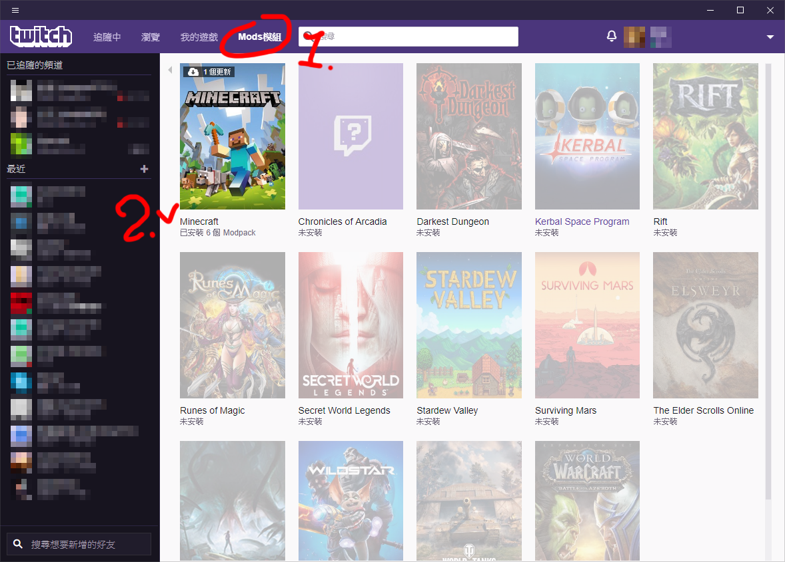
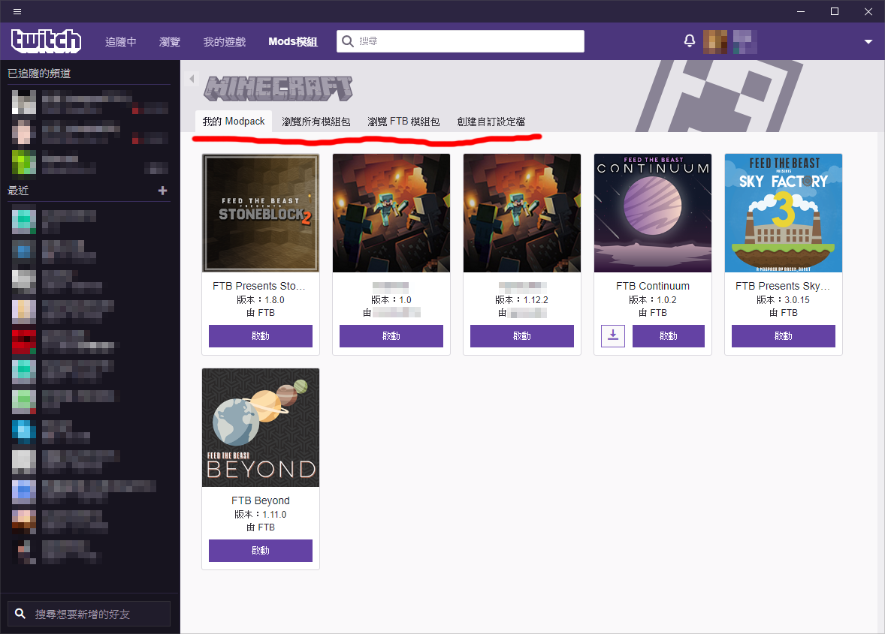
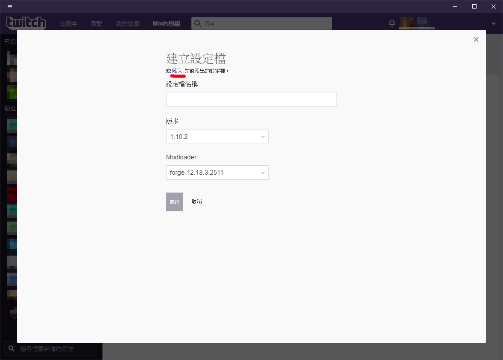
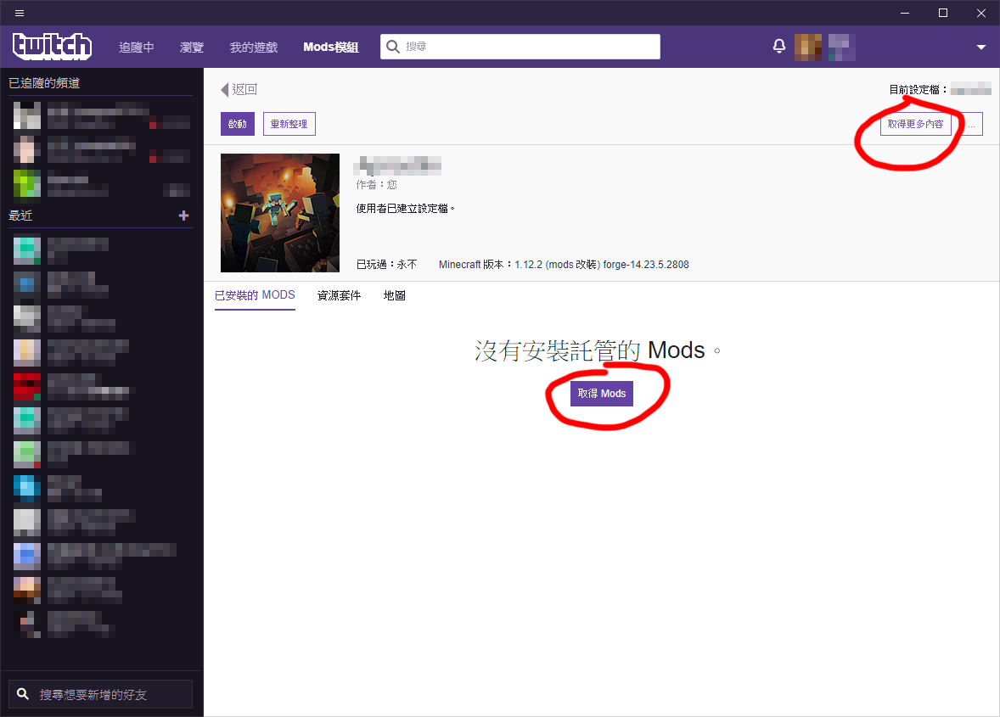
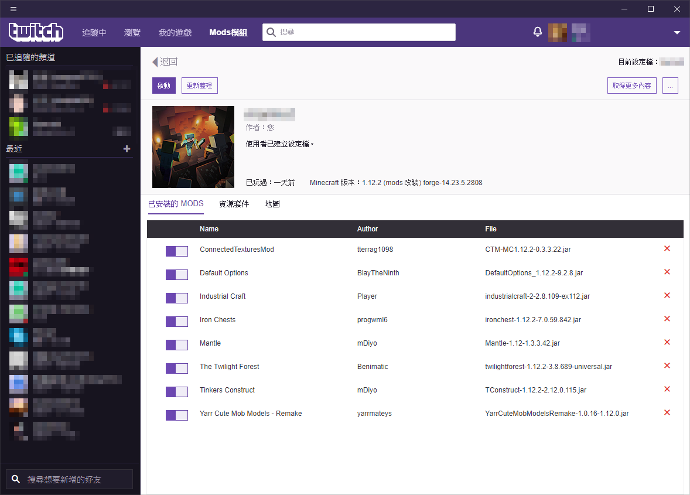

1. 打開 twitch，找到 Mods模組 > Minecraft。

2. 點進去後會像下圖一樣，只是還沒用過的話會是空的，點下紅線最後邊的 創建自訂設定檔。

3. 如果已經有設定檔的話，請點下紅線的匯入，沒有的話就自行設定一個即可 (forge 會依照遊戲版本更動，所以要先選遊戲版本，再選 forge)，設定好之後會回到第二張圖，找到剛剛自己設定的那一個，點圖片進入設定檔。

4. 此時已經可以去找模組來安裝了，按下圖中圈起來的地方 (哪個都可以) 就會跳出搜尋畫面，依照自己喜好安裝模組吧!
(MOD: 就是模組，資源包: 就是材質包，地圖: 就是地圖)

5. 安裝好後會如圖上這樣子，可以對模組做更動、甚至是刪除，再也不用自己下載檔案去找資料夾放檔案了~
